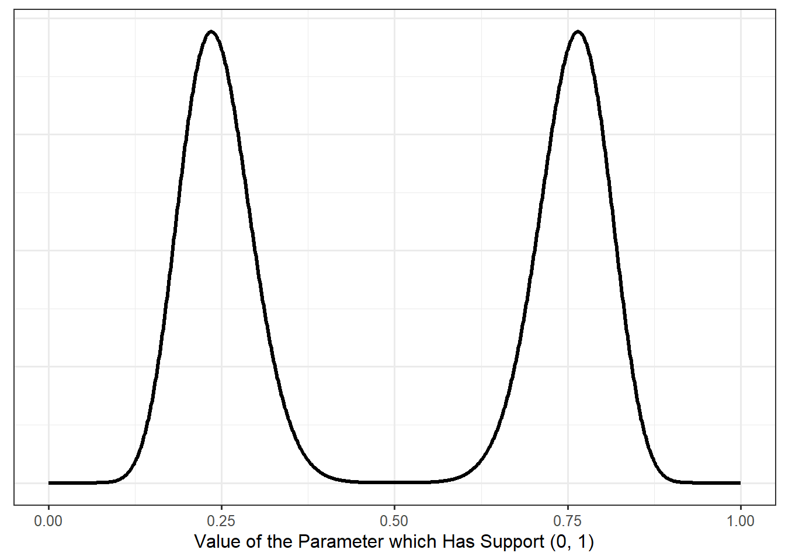

16 Constructing Prior Distributions
The selection of a prior distribution is integral to the Bayesian framework; it is also the most criticized component. There is rarely sufficient prior information to determine an exact prior distribution; that is, rarely do we know for certain the family which represents the distribution as well as the exact parameters. Instead, we make some modeling assumptions, as with any analysis. In this chapter, we examine some common paths when constructing prior distributions and the implications of allowing the prior distribution to vary across analysts.
16.1 Elicitation from Experts
Ideally, the prior distribution would not be arbitrary but guided by experts. Example 10.2, for example, illustrated the use of statements from experts to form a parametric approximation to the prior information. We elicited information about the uncertainty in order to determine values for the hyperparameters — those values that determine the specific shape of the prior distribution.
For Example 10.2, the prior distribution chosen was a conjugate prior.
Definition 16.1 (Conjugate Prior) A prior distribution chosen such that the posterior distribution belongs to the same family as the prior distribution, with the (hyper)parameters that govern the family updated based on the observed data.
In Example 10.2, we chose a Beta distribution to represent the prior, and we found in Example 11.2, the posterior distribution also belonged to the Beta family. The choice to use a conjugate prior was often done historically in order to simplify computation in an era where computing power was limited. In the era of higher-speed computing, this is no longer necessary.
One argument for the use of conjugate priors is that the form is invariant to the data; that is, the data is restricted in what it can say about the unknown parameter. The data can update our beliefs, but it cannot update the family which encodes those beliefs.
While we will not go into details here, it is almost always possible to construct a conjugate prior. And, if chosen carefully, that prior can approximate nearly any prior information given.
Note
The posterior distribution is always a combination of the prior distribution and the likelihood. Conjugate priors make that very clear. As the sample gets large, the prior distribution is swamped by the data; and, as the sample size increases, Bayesian inference agrees with Frequentist inference.
Again, Example 10.2 illustrated combining the expert opinions provided with a parametric family in order to construct a prior distribution. When we are unable to determine a suitable parametric approximation for the prior beliefs provided, a “histogram approach” is possible.
Definition 16.2 (Histogram Approach to Constructing a Prior) Using expert information, attach probability to various intervals for the parameter. Specifically,
- Define \(m\) intervals \(\left(\theta_{j-1}, \theta_j\right)\) for \(j = 1, 2, \dotsc, m\) that partition the parameter space; define \(\theta_0\) as the lower bound of the support for the parameter, and define \(\theta_m\) as the upper bound of the support for the parameter.
- Eliciting expert opinions, assign probability \(\pi_j\) to each interval: \(\pi_j = Pr\left(\theta_{j-1} < \theta < \theta_j\right)\) for each \(j = 1, 2, \dotsc, m\).
- Set the prior \(\pi(\theta)\) to be the piecewise distribution over this interval where \(\sum_{j=1}^{m} \pi_j = 1\).
There have been critiques of eliciting information from experts. Estimates given may be biased, due to the current availability of data on which the experts are making their informed decisions. We tend to be overconfident in our opinions or go with our initial reaction instead of allowing our beliefs to be updated. We also tend to want to create the prior only after observing the data, despite the fact that the prior should capture our beliefs prior to observing the data.
The experts may not actually represent a reasonable sample to capture widespread prior belief. How does one determine who is expertly qualified to speak on a particular topic? How do you rank levels of expertise?
We mention these critiques because more important than the choices we make is that those choices be clearly documented. It is okay to construct work that others critique; that is how science develops. No study is perfect, and being able to identify and own the limitations of our study and analysis is critical to the development of knowledge.
16.2 Mixture Priors
Chapter 15 introduced the idea of a mixture distribution (Definition 15.3) for constructing a prior. While we discussed its use for a particular case, mixture distributions have wider applicability. Suppose we would like to work with a parametric approximation, but we cannot find a parametric family which captures the structure suggested by the prior information. In these cases, combining multiple distributions may be appropriate.
As an example, suppose we have a parameter on the support \((0, 1)\). For such a parameter, it is natural to consider the Beta distribution for a prior. However, suppose our prior beliefs suggest a multimodal distribution similar to that in Figure 16.1; it is impossible to choose hyperparameters for a Beta distribution that would result in such a prior. Instead, we could achieve such a prior by mixing two Beta distributions.
Definition 16.3 (General Mixture Distribution) Let \(\theta\) be a parameter with support \(\Theta\), and let \(\pi_k(\theta)\) be a valid distribution on the support, for \(k = 1, 2, \dotsc, K\). Then,
\[\pi(\theta) = \sum_{k=1}^{K} w_k \pi_k(\theta)\]
is a valid prior distribution provided \(\sum_{k=1}^{K} w_k = 1\).
It turns out that if each component of the mixture distribution \(\pi_k(\theta)\) is a member of the conjugate family, the entire prior will be conjugate (a weighted average of distributions). This was illustrated in Example 15.1.
Nothing requires that the individual components of a mixture distribution be of the same family. For example, we might choose to mix a Normal distribution with a t-distribution in order to capture the presence of some outliers.
Note
While we have described the use of a mixture distribution for the prior distribution, nothing prevents the use from using a mixture distribution for the likelihood.
It has been shown that any distribution can be approximated by some mixture distribution. That is, if we choose \(K\) to be large enough, we can approximate any distributional shape with a mixture distribution.
16.3 Chains
Within this unit, we have developed the fundamental concepts of Bayesian inference in a general setting. We have avoided a litany of examples and instead opted to illustrate the concepts with a single unifying example throughout the text (Example 9.1). In both this example and the exposition in the text, we have acted as though there is a single parameter \(\theta\) governing the likelihood. Many interesting questions, however, involve models for the data that depend upon multiple parameters. These types of problems often necessitate the need for numerical solutions, which we address in the next unit. Here, we simply discuss a common tool for constructing priors over multiple parameters.
When \(\theta\) is a parameter vector, then \(\pi(\theta)\) is actually a joint density across all parameters. Therefore, one key decision that must be made is whether, a priori, we believe these parameters to be independent of one another.
Example 16.1 (Heights of Children) During early development, children are regularly benchmarked against national growth charts. One such chart traces a child’s height as they grow. However, these charts were developed using the entire population of “healthy” children. Suppose I am interested in developing a growth chart for children with Hispanic parents, as I believe they tend to be a bit shorter, on average. It is typical to model heights using a Normal distribution, which has two unknown parameters (which govern the location and spread of the distribution).
We consider developing a likelihood and prior for this process.
The likelihood for the above example is readily available if we are willing to assume a random sample of \(n\) children (of the same age) born to Hispanic parents:
\[ \begin{aligned} f(\mathbf{y} \mid \mu, \tau) &= \prod_{i=1}^{n} \frac{\tau^{1/2}}{\sqrt{2\pi}} e^{-\tau/2 (y_i - \mu)^2} \\ &= \frac{\tau^{n/2}}{(2\pi)^{n/2}} e^{-(\tau/2)\sum_{i=1}^{n}(y_i - \mu)^2} \end{aligned} \]
where we have defined the likelihood in terms of the mean \(\mu\) and the precision \(\tau\), which is the inverse of the variance. The likelihood was simplified by assuming the height of one child is independent of the height of any other child. Suppose we are further willing to believe the parameters are independent of one another; then, it is reasonable to propose the prior distributions independently. Choosing a Normal prior for \(\mu\) and a Gamma prior for \(\tau\), we could then propose
\[ \begin{aligned} \pi(\mu) &= \frac{\sqrt{b}}{\sqrt{2\pi}} e^{-b/2 (\mu - a)^2} \\ \pi(\tau) &= \frac{s^r}{\Gamma(r)} \tau^{r - 1} e^{-s\tau} \\ \Rightarrow \pi(\mu, \tau) &= \pi(\mu) \pi(\tau). \end{aligned} \]
The joint prior across the parameters is easy to specify because of the independence assumption. Of course, nothing requires we assume the parameters are independent of one another; this was a modeling assumption. A different set of beliefs would lead to a different structure for the prior. For example, the prior given by
\[ \begin{aligned} \pi(\tau) &= \frac{s^2}{\Gamma(r)} \tau^{r - 1} e^{-s\tau} \\ \pi(\mu \mid \tau) &= \frac{\sqrt{\tau}}{\sqrt{2\pi}} e^{-\tau/2 (\mu - a)^2} \\ \Rightarrow \pi(\mu, \tau) &= \pi(\mu \mid \tau) \pi(\tau) \end{aligned} \]
suggests a Gamma prior for \(\tau\) and a Normal prior for \(\mu\) conditional on the value of \(\tau\). This hierarchical structure allows the mean \(\mu\) to depend on the precision \(\tau\). The joint distribution of the parameters (prior to seeing the data) is then the product of the marginal distribution of \(\tau\) and the conditional distribution of \(\mu \mid \tau\).
This process of defining a prior in stages, each stage conditioning on parameters for which a prior distribution is specified, is known as “chaining.”
Regardless of whether we form a prior through assuming independence or through chaining, the prior predictive distribution (the denominator in Bayes Theorem) will have the form
\[\int \int f(\mathbf{y} \mid \mu, \tau) \pi(\mu, \tau) d\mu d\tau.\]
The more parameters we have, the more complex the integration in the denominator; this is what motivates the computational methods we examine in the next unit.
16.4 Non-Informative Priors
Each of the above sections assumes that we have prior information that needs to be encoded into a distribution; we now consider the case when we have very little (or no) prior information. In such a setting, we must determine how we encode “ignorance.”
Definition 16.4 (Laplace Prior) The Laplace prior, also known as a “flat” prior, considers the form
\[\pi(\theta) = 1 \qquad \forall \theta \in \Theta.\]
Warning
For any unbounded support \(\Theta\), the Laplace prior will be improper; that is,
\[\int \pi(\theta) d\theta = \infty.\]
In such settings the Laplace prior is not actually a valid density function. This seems like it is breaking all the rules, and to some degree it is, but it is still commonly used.
Warning
The Bayes Factor should never be computed when you have an improper prior as the prior odds are not defined since there is no valid probability of each hypothesis a priori.
The Laplace prior is a common default prior when no (or little) prior information is available. However, a flat prior cannot represent total ignorance. When the parameter space is unbounded, notice that a flat prior essentially says that no matter how large of a value \(q\) you imagine, \(Pr\left(\theta > q\right) = \infty\) — that is, there is always infinite probability that \(\theta\) is larger than you can imagine.
Big Idea
Flat priors are chosen because they are easily overwhelmed by the observed data.
The benefit of a flat prior is that the posterior distribution is proportional to the likelihood. The idea here is to make the Bayesian framework dependent solely on the data, similar to a Frequentist approach (though the two are still not guaranteed to give the same results).
Flat priors are a subset of a larger class of priors that continues to be an active area of research; this larger class of priors is determined solely by the form of the likelihood.
Definition 16.5 (Noninformative Prior) A prior distribution which is derived solely based on the form of the likelihood.
A noninformative prior seems like a compromise between Bayesians and those who dislike the subjective nature of a prior distribution. So, why is this not the standard? On the one hand, true Bayesians argue that we should make use of prior information; we should not seek to make use of only the data available in that single study. This allows the information from one study to become the prior information for a follow-up study instead of beginning from scratch. Second, there is a potential pitfall when using noninformative priors when they are improper — it is possible for the posterior distribution to be improper (which is a nice way of saying it is not a distribution at all)! If the posterior distribution is improper, it cannot yield any valid inference on the parameters.
Warning
Valid inference cannot be made when the posterior distribution is improper.
An improper prior can lead to an improper posterior; however, a proper prior will always lead to a proper posterior. The danger is that software which automates Bayesian analyses currently have no way of checking if a posterior is proper; so, this must be done manually. As computing the posterior can be difficult (the entire reason for the next unit), this often involves bounding the integral in some way — a job for true mathematicians.
Fear around improper priors often leads to what are known as vague priors. This is taking a parametric family and choosing the hyperparameters to result in a massive variance so that the prior distribution, while proper, appears flat over the parameter space. The idea here is to allow the data to easily overwhelm any prior information.
Big Idea
Noninformative priors try to make it easy for the likelihood to dominate the prior distribution in the computation of the posterior distribution.